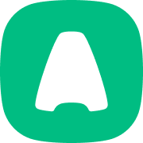

AI Testing Automation Platform
Scalable AI-driven QA ecosystem for web, mobile and API testing with intelligent automation, bug analysis and reporting.
View Project →
Senior Software Engineer
AI-Driven Development · QA Automation · Prompt Engineering · AI/LLM Testing
Prompt · Build · Test · Improve · Repeat

Aircall
Permanent · 5 yrs 11 mos
Jun 2026 – Present · 3 mos
Remote · UK
Working at the intersection of Software Engineering, Quality Engineering, AI/LLM, Test Automation and Observability — building AI-driven solutions while contributing directly to Messaging development.
AI-Driven Software Development
AI-Powered QA & Test Automation
Observability & Continuous Synthetic Testing
AI-Driven Development · AI QA · LLM/Agentic Workflows · E2E Automation · Messaging · Synthetic Monitoring · Observability · Datadog · Slack Automation · Test Engineering · Continuous Quality
Oct 2021 – Jun 2026 · 4 yrs 8 mos
Remote · UK / France
Led QA for Mobile and Messaging on Aircall’s cloud voice platform.
Nov 2020 – Present · 5 yrs 11 mos
Paris, Île-de-France, France · Messaging team · AI-driven development
Scalable AI-driven QA ecosystem for web, mobile and API testing with intelligent automation, bug analysis and reporting.
View Project →
AI-powered QA assistant for test case generation, validation, updates and exploratory testing.
Internal / Private Project Happy to discuss if you'd like to know more.
Modern web automation framework with Playwright and AI for faster, reliable test execution.
View Project →
Robust mobile automation framework for iOS & Android with parallel execution and CI/CD.
View Project →
API testing and backend automation with Postman, REST-assured and integration testing.
Internal / Private Project Happy to discuss if you'd like to know more.
Testing AI-powered features — chatbots, voice agents, NLP, guardrails and hallucination testing.
Internal / Private Project Happy to discuss if you'd like to know more.